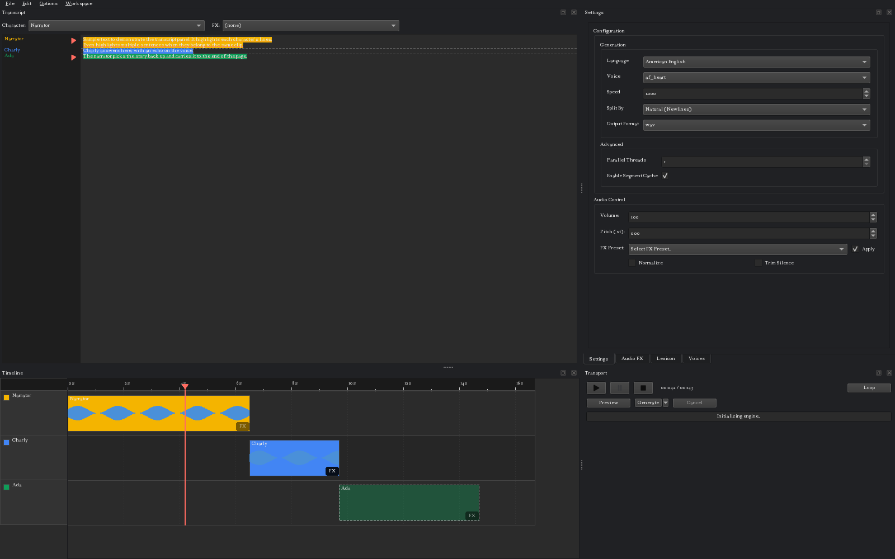
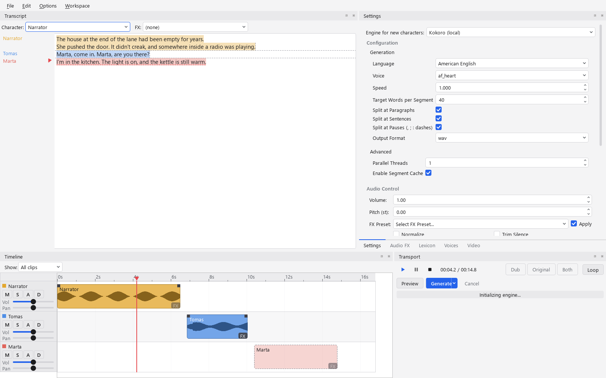

.tbaw file
Text to speech, edited like a DAW project.
Kokoro GUI is a desktop workstation for turning a script, or a whole ebook, into audio. Assign characters to a transcript, watch clips land on their own timeline track, and regenerate only what changed. Everything runs on your machine.


Write, assign, generate, export
The transcript is the source of truth. Audio is a render of it, tracked per clip, so you never wonder which file is current.
Write the script
Paste text or import a .txt, .pdf or .epub. Tag speakers inline, or select a range and pick a character from the combo above the editor.
Generate what changed
Auto-split turns tags into clips on each character's track. Generate renders only the clips whose text or settings moved since their last take. Edit one line, regenerate one clip.
Mix and export
Play the arrangement from the transport, drag clips in time, tweak FX while it plays. Export mixes every track down to one file, with an .srt and per-clip files if you want them.
A 2x2 grid of docks, and the model behind it
Transcript and settings tabs on top, timeline and transport underneath. Every panel is a dock; Workspace > Simple hides the timeline when you just want to read text aloud.
A transcript that knows who's speaking
Each run of text is colored by its character. The gutter names the speaker and FX once per change and draws a play button beside every clip that's out of date. Click it to regenerate that clip alone.
Transcript reference →A timeline on a real seconds axis
One track per character. Generated clips show waveforms; ungenerated ones are dashed estimates that learn from past runs. Drag a clip in time, onto another track, or Shift+drag inside it to replace a sub-range with new TTS.
Timeline reference →FX that never dirty a clip
Seventeen Pedalboard sliders in five groups, applied when a clip is played or exported, never written into it. Move a slider mid-play and you hear it on the next pass.
FX reference →Regenerate only what moved
Every segment is keyed by a hash of its text, voice, speed and engine version. Change any of those and the clip goes out of date. Change anything else and it doesn't.
How segment keys work →Settings scoped to the selection
Nothing selected edits the project defaults. A clip selected edits its overrides. A character selected edits its preset, and every clip using it follows.
Settings reference →Two ways to get a voice
With Kokoro, pick a named voice or blend two into a new one in the Mixing tab. With Audio8, drop in a reference WAV, let the bundled ASR write the transcript, and save it as a clone. The Voices tab shows whichever tool the active engine supports.
Compare the engines →Projects travel as one file
A .tbaw (text based audio workflow) bundle holds the text, the clips, every generated segment, and the voice mixes, references and FX presets the project names. Open it on another machine with the same engines and it plays.
Two local models, one interface
Both sit behind the same backend abstraction. Options > Engine swaps the voice list, the sample rate and the Voices tab live. Nothing else about the app changes.
| Kokoro default · hexgrad/kokoro | Audio8 Audio8-TTS-Preview-0.6b | |
|---|---|---|
| Voices | Named base voices, plus custom mixes | Zero-shot cloning from a reference WAV and its transcript |
| Languages | American and British English, Spanish, French, Italian, Portuguese, Japanese, Chinese | Whatever the reference clip speaks |
| Sample rate | 24,000 Hz | 44,100 Hz |
| Parallelism | One pipeline per worker thread, so chunks render in parallel | One shared model behind a lock; threads don't help |
| JIT streaming | ● Supported | ○ Falls back to batch |
| Voices tab | Mixing | Voice Reference, with Auto-transcribe |
| Licensing note | Apache-2.0 model | Auto-transcribe defaults to Whisper (MIT, runs locally). The Audio8-ASR-0.1B option is CC-BY-NC-4.0; Vosk is the Apache-2.0, offline alternative |
One fixed chain, applied at read time
This is the order in process_audio. It runs when a clip is played, drawn on the timeline, or exported, over the raw model output on disk.
Trim
Leading and trailing silence, if enabled
Volume
A plain gain multiply
Pitch
Shifted by resampling
Time stretch
Only when Fit to slot set one
FX chain
Every enabled Pedalboard effect
Normalize
Peak to 98% of full scale, last
One .tbaw per project. Nothing else to keep track of.
Text based audio workflow. A zip with a manifest, so anyone can open it, and everything a project needs to play back on a second machine.
- Saves in the background. Ctrl+S writes a temp file and swaps it in, so a crash never leaves a half-written project. Autosave goes to a working copy, never to your file.
- Carries its voices. Custom Kokoro mixes, Audio8 references and FX presets the project names ride inside it. The Voices tab lists a bundle's own voices first.
- Recovers after a crash. Reopen the project and it offers the unsaved session, even if the file was renamed or moved in between.
- Small when you want it. Untick "bundle generated audio" in the Export dialog and the file holds just text and settings; clips regenerate on open.
manifest.json format, version, stats, hashes document.json text, clips, tracks, characters project.json export and bundle options audio/generated/ 3f9a…c2_0.wav one file per segment fx/ Whisper.json named FX presets engines/kokoro/voices/ narrator_mix.pt custom voice mixes engines/audio8/refs/ villain.wav cloning reference villain.txt and its transcript
What's new
4.0.0 is the DAW-style rebuild. The full history, back to 3.1, is in the README.
Pauses, takes and a real mixer
Clips placed one after another get 0.35 s of silence between them and 0.9 s across a blank line, both adjustable, and [pause:1.5] in a script gives the next clip its own gap. Existing projects that aren't hand-timed get longer on first open; set both gaps to 0 for the old placement.
Regenerating keeps the old take, and the clip's menu switches between takes. Each track has mute, solo, a fader, pan and a volume automation lane; clips have fade handles, overlaps can crossfade, and playback and export are stereo. Markers on the ruler name points, loop a region and bound an export. The ruler and clock can show SMPTE timecode, drop-frame included.
For review and dubbing: a status and note per clip, a filter that dims what's done, a cue sheet CSV on export, and the source line a dub is written against. Generated clips remember word timings (Kokoro's own in English, Whisper otherwise), so the transcript highlights the spoken word, Ctrl+click seeks to a word, and export can write one subtitle per word. Audio8 characters can have named voice variants.
Lexicon on clips, sentence-sized pieces, Whisper
The Lexicon now applies to timeline clips, not just whole-document generation, and adding or removing a rule marks only the clips it rewrites as stale.
Text is generated in pieces of about 40 words (adjustable), ending at a paragraph, a sentence end or a pause, each switchable. A sentence is only cut past twice the target, a word never. One piece is one file, so a long paragraph no longer leaves a clip stale forever and subtitle cues end where sentences do.
Auto-transcribe defaults to Whisper large-v3-turbo, run locally. It asks before the first download (about 1.6 GB) and can print timed words from the command line. On Linux and macOS the cache and voice folders are now private to your user.
A document, not a text box
The rebuild. 3.2.0 was a CustomTkinter form; 4.0.0 is a PySide6 shell over a document with clips, tracks and characters layered on top, per-clip dirty tracking, undo and redo, and a settings panel scoped to the selection. Transcript | Settings, Audio FX, Lexicon and Voices tabs on top; Timeline | Transport underneath, with saved Advanced and Simple workspaces. Light and dark themes.
Clips sit on a real seconds axis with waveforms, a ruler and a playhead. Play, pause, stop and seek through one sounddevice stream that mixes the arrangement in the callback. File > Export mixes the timeline down to one file with optional .srt and per-clip files. Audio FX are non-destructive: clips are raw model output and the FX chain, volume, pitch, normalize and trim are applied when the transport, the export or the timeline reads them, so moving a slider never marks a clip out of date.
A project is one .tbaw file that carries the text, the clips, every generated segment and every named voice mix, reference and FX preset it uses. Save runs in the background and never leaves a half-written file; a crash offers to recover the unsaved session. A clip's audio lands in the project's working copy under a name derived from what produced it, and regenerating a clean clip makes a fresh take. Launch reopens the last project under a welcome dialog with recents, New, New from text file and a details pane.
Engines are pluggable: Audio8 voice cloning joined Kokoro as a second real backend, with ASR choices for auto-transcribing a reference.
From clone to first sample
Python 3.11 or newer and eSpeak NG. Both models download from Hugging Face the first time you pick them.
4.0.0 is a beta, and a different program from 3.2.0. 3.2.0 is the old CustomTkinter app: one text box, one voice, files to a folder. It's frozen and gets no fixes. 4.0.0 is the rebuild this site describes. The intent is that every 4.x release opens a .tbaw made by any earlier 4.x, the beta included; treat that as a goal rather than a promise until 4.0.0 final.
Still want 3.2.0? git clone --branch 3.2.0 --depth 1 the same URL and follow the README in that checkout; its dependencies and launch steps differ from the ones here. Nothing carries over between the two except the presets/ and custom_voices/ folders.
# clone the current beta (the tag name changes each release; # the Releases page lists them all) git clone --branch 4.0.0-beta.1 --depth 1 https://github.com/CoffeeMethod/KokoroGUI.git cd KokoroGUI # virtual environment python -m venv .venv .venv\Scripts\activate # Windows source .venv/bin/activate # macOS / Linux # install and run pip install -r requirements.txt python main.py # or run.bat on Windows
# Windows: run the installer from https://github.com/espeak-ng/espeak-ng/releases # macOS brew install espeak-ng # Debian / Ubuntu sudo apt install espeak-ng # Fedora sudo dnf install espeak-ng
Python 3.11+
The only hard language-version requirement.
eSpeak NG
Kokoro's phonemization step needs it at runtime. Install it before the first run.
A GPU is optional
Both models run on CPU. Options > Device picks CUDA when PyTorch reports one.
First run downloads weights
Kokoro and Audio8 pull from Hugging Face on first use. Audio8 loads with trust_remote_code=True. Whisper (about 1.6 GB) asks before it downloads.
Smaller or offline transcription
Copy .env.example to .env. Set WHISPER_MODEL to small, base or tiny for a lighter Whisper, or VOSK_MODEL_PATH to use Vosk.
Trouble with torch?
Follow the platform-specific install at pytorch.org before pip install -r requirements.txt.
Local, inspectable, Apache-2.0
No account, no upload, no per-character billing. Clone it, read the code, ship your audiobook.